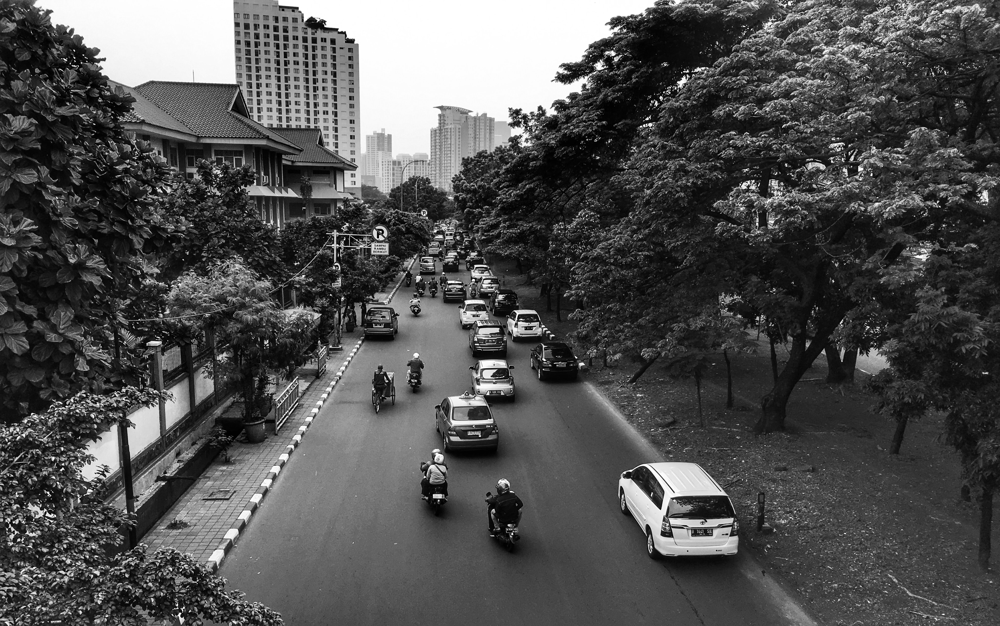
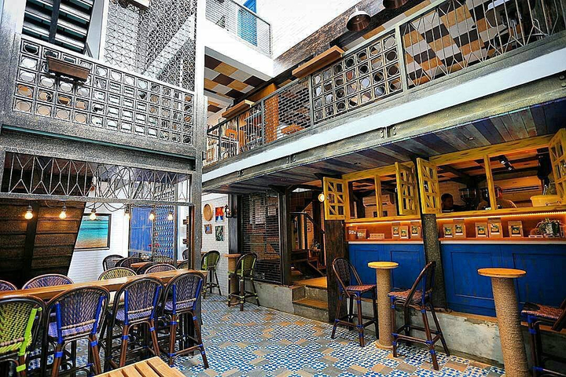
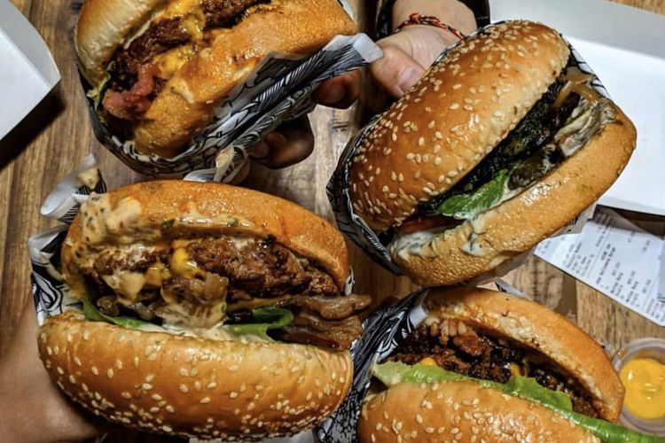
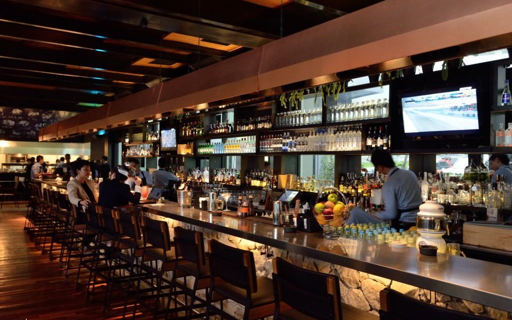
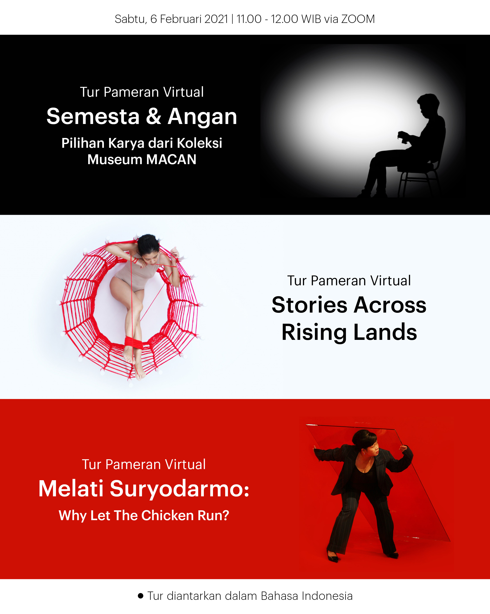
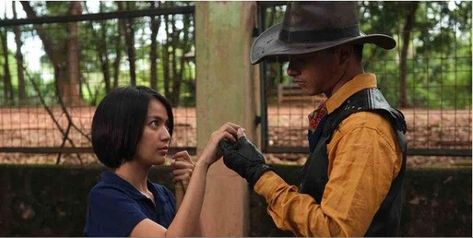

About

j-Guide merupakan sebuah website daily guide yang simple bagi semua orang yang butuh bantuan dalam
menentukan kegiatan kesehariannya. Website ini dibuat karena terinspirasi dari instagram @manualjakarta yang
menyediakan guide keseharian atau weekend yang keren.
Pada website ini disediakan berbagai rekomendasi, contohnya seperti pada fitur "to-eat" yang
menampilkan list tempat makan populer di jakarta dan pada fitur "to-do" yang menyediakan rekomendasi kegiatan
beserta tempat yang cocok untuk beraktivitas.
So check this out and Have a nice day!
Today to-eat
Coffee Time
Giyanti Coffee Roastery

Popular Dishes: Chicken Pie, Carrot Cake, Coffees, Mocha, Pastries, Brownies
People Say This Place Is Known For: Quaint Little Place, Soft Music, Best Food under Best Budget, Decorations, Weekend Brunch, Vibe
Jl. Surabaya No. 20, Cikini, Jakarta (+622131923698)
Lunch Time
Lawless Burgerbar

Popular Dishes: Chicken Burger, Beef Patty, Sunny Side, Bacon, Beer, Meat
People Say This Place Is Known For: Rock Music, Delicous, Service and Quality of Food, Extensive Bar Menu, Fusion Dishes, Ample Seating Area
Jl. Kemang Selatan VIII No. 67H-67I, Kemang, Jakarta (+6281381121602)
Dinner Time
Bluegrass Bar & Grill

Popular Dishes: Jumbo Prawn, Classic Burger, Potato Fries, Cocktails, Pork Ribs, Nachos
People Say This Place Is Known For: Good Food and Good Ambience, Great Atmosphere, Crowd, Nice Service, Favorite Place, Vibe
Bakrie Tower, Lantai Ground, Jl. H.R. Rasuna Said, Kuningan, Jakarta (+622129941660)
Today, Saturday 20 February
In the morning: Cycling
Saturday morning is a great time to cycling with ur family, friends, or maybe your crush(?). You can do this at Gelora Bung Karno area at Senayan.
In the afternoon: Semesta & Angan : Pilihan karya koleksi museum MACAN

Join us to explore two new exhibitions at Museum MACAN: ‘Stories Across Rising Lands’ and ‘Semesta dan Angan / Multiverses and Dreams: Selected Works from the Collection of Museum MACAN’ as well as the existing exhibition on view ‘Melati Suryodarmo: Why Let the Chicken Run?’
Saturday 6 February 2021 at 11.00 – 12.00 WIB (GMT+7)
The curatorial tour for the exhibitions will be led by Asep Topan & Jeong-ok Jeon, Asri Winata, and Ady Nugeraha. This program will take place on Zoom.
In the evening: Kinosaurus Virtual Cinema : Humans : A Collection Of Short Stories

Kinosaurus Virtual Cinema ada untuk memungkinkan kami menjaga semangat para pecinta sinema dan tetap membuka akses menonton. Perubahan yang terjadi dalam kondisi pandemi ini membuat kami terus berpikir bagaimana cara agar semangat ini tidak kendur atau hilang dan format daring adalah salah satu jalan keluarnya. Sekarang, untuk menonton film hasil kuratorial Kinosaurus tidak hanya bisa dilakukan di ruang fisik kami di Kemang, Jakarta, tapi kalian yang berada jauh pun bisa ikut serta dari tempat masing-masing. Kinosaurus Virtual Cinema juga adalah upaya untuk mendukung kelangsungan karya pembuat film dan budaya sinema lewat penguatan ekonomi bersama.
dia.lo.gue Jl. Kemang Selatan 99a, Jakarta, 12730

{kind=link}
{kind=link}